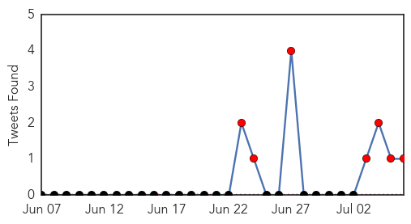
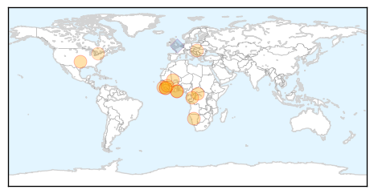
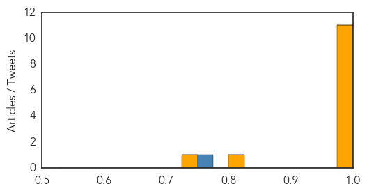

Ebola
30-Day Web Trend
8 alerts, 7 warnings
30-Day Twitter Trend
1 alerts, 0 warnings

Article Locations
Article Confidences
Top Articles:
- 1.000
- As Ebola Cases Spike, WHO Asks For More Money And Help
- 0.999
- Victoria doctor off to aid Ebola victims in West Africa
- 0.999
- WHO To Help West Africa Coordinate Response To 'Unprecedented' Ebola Outbreak
- 0.999
- Suspected Ebola Case Reported In Accra
- 0.999
- Health ministers agree on priority actions to end Ebola outbreak in West Africa
- 0.999
- Ebola Outbreak in West Africa Aided by Ignorance and Distrust Says WHO
- 0.991
- Ghana Ebola consensus concluded
- 0.987
- ‘Out of control’ disease needs new approach
- 0.987
- Ebola Therapy Put on Hold by FDA
- 0.986
- To Combat Ebola Outbreak, Health Officials Call For 'Drastic' Action
- 0.984
- Kenya : Red Cross suspends Ebola operations in southeast Guinea after threats
- 0.817
- Anthrax Identified in Hungarian Beef
- 0.732
- Infectious disease is not a problem of the past
Top Tweets:
- 0.770
- RT: isaric priorities remain acute respiratory infections, but also febrile diseases, including haemorrhagic fevers like Ebola
Yellow Fever
30-Day Web Trend
3 alerts, 0 warnings

30-Day Twitter Trend
0 alerts, 0 warnings

Article Locations

Article Confidences

Top Articles:
-
No articles found for Jul 06, 2014
Top Tweets:
-
No tweets found for Jul 06, 2014